Containers effectively implement a virtual operating system on top of a real one. Multiple containers can share an underlying real operating system in a manner that requires a lot less overhead than using multiple virtual machines to do the same. In this lab, we will use Docker, the defacto standard for building and running containers, in order to containerize the guestbook application. This will generate a container "image", a blueprint that will allow us to instantiate multiple containers with identical run-times. Container images can be stored in repositories such as Dockerhub (docker.io) much like source code can be stored in repositories such as Github.
In order to run docker, however, you must have administrator access. Unfortunately, this means you can not run docker containers on linuxlab machines. Within your Ubuntu VM that you set up for the course, clone the repository and change into the directory containing the code.
git clone https://github.com/wu4f/cs430-src cd cs430-src/04_container_dockerhub
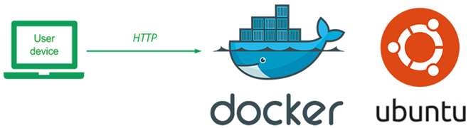
Docker container images are built from recipes contained in Dockerfiles. Images are created in layers starting from their base. For each command in the Dockerfile, a new layer is added to the image that is built. If many container images share the same layers, this allows a system to save storage overhead.
The Dockerfile.ubuntu file is shown below. The file does the following
- Specifies the base layer to be Ubuntu 20.04 including all of its default packages and libraries. Places all of it into the container image for the application to access.
- Specifies a maintainer.
- Updates and installs Python's package manager
pip. We usepipto install the Python package we need to run the application (e.g.flask) - Copies the contents of the current directory (
04_container_dockerhub) into the container directory/app - Sets the working directory of the container image to that directory
/app - Installs the packages in
requirements.txtinto the container image - Sets the entrypoint of the container when started (
python) - Sets the command arguments to start it with (
app.py)
Dockerfile.ubuntu
FROM ubuntu:20.04
LABEL maintainer="yourname@pdx.edu"
RUN apt-get update -y
RUN apt-get install -y python3-pip
COPY . /app
WORKDIR /app
RUN pip install -r requirements.txt
ENTRYPOINT ["python3"]
CMD ["app.py"] You will make a single edit to this file before using it. Specify your name and PSU e-mail address as the maintainer for the container image that will be built.
We will now build our first container image. Because access to Docker requires elevated privileges, docker commands must typically be run via "sudo" (e.g. superuser do). This can be quite tedious. An alternative is to add yourself to the docker group, which is configured to automatically obtain elevated privileges when needed.
When setting up the course VM, however, you should have already done so with the commands below. If not, perform the installation again.
sudo apt install docker.io -y sudo usermod -a -G docker $(whoami)
After installing docker, the usermod command adds (-a) your username (returned via $(whoami)) to the group docker (-G docker).
To make this change hold, log out of your machine and log back in. Then, change back into the directory and build the container image from the Dockerfile using the current directory (.) and create a local tag for the resulting image named helloubuntu (-t)
docker build -f Dockerfile.ubuntu -t helloubuntu .
Use the command below to show the size of the image generated.
docker images
- Take a screenshot of the results for your lab notebook
Then, create a running instance of the helloubuntu image and name it hellou (--name). Have the container run in detached mode (-d) without an interactive shell and map the host's port 8000 to the container port 5000 (-p 8000:5000).
docker run -p 8000:5000 --name hellou -di helloubuntu
You might be wondering why the Python/Flask application comes up on port 5000. In this case, within app.py, we have not specified the port parameter as we did in prior labs. This causes the server to run on Flask's default port (5000).
app.py
# Run with default Flask port 5000
if __name__ == '__main__':
app.run(host='0.0.0.0', debug=True)Test the container by retrieving http://127.0.0.1:8000 using a browser on the VM, wget, or curl.
We will now get practice running some of the docker commands. To list all running (and stopped) containers, execute the command:
docker ps -a
Note under the NAMES column, the container that we named hellou.
To stop this container, perform the following:
docker stop hellou
See that it is no longer running via:
docker ps -a
Then, start the container via its name:
docker start hellou
This will start the container, but will not give you an interactive shell session on it.
To get an interactive shell on the container, perform the following:
docker exec -it hellou /bin/bash
Within the container, show the contents of the current directory via ls, the contents of the file specifying the Linux standard base being used (/etc/lsb-release), and the output of the process listing command (ps -ef). Exit out of the shell and container.
Stop the container again.
docker stop hellou
Then remove the container from the system.
docker rm hellou
Note that this command only removes the container instance. The container image it was derived from (helloubuntu) still remains on the system and can be used to launch subsequent container instances.
We will now publish the container image we created locally (helloubuntu) to the Docker Hub registry at docker.io. Note that Docker Hub is commonly used as a public registry. Companies often wish to store their container images privately in a location they control. They also wish to place the registry near the machines that are running instances. For this, cloud platforms implement private container registries on a per-project basis. For Google Cloud, this is done via Container Registry (gcr.io) and for AWS via Elastic Container Registry (ecr).
Using your credentials setup at the beginning of the course, login to Docker Hub.
docker login
The local container image has a tag of helloubuntu. To access it via Docker Hub, it will require a global tag that is identified via your Docker Hub user ID. Run the following command, replacing wuchangfeng):
docker tag helloubuntu <dockerhub_id>/helloubuntu
Similar to git, docker can upload the image to the registry using a push command:
docker push <dockerhub_id>/helloubuntu
We will now look to run the container image straight from Docker Hub. Examine the container images you've created and tagged so far:
docker images
Then delete both of them via their names with the remove image command:
docker rmi helloubuntu <dockerhub_id>/helloubuntu
- Run the image directly from Docker Hub and show a screenshot of the output of the command in your lab notebook.
docker run -di -p 8000:5000 --name hellou <dockerhub_id>/helloubuntu
As before, the container is brought up and the local port of 8000 is mapped into the container port of 5000. Test the container by retrieving http://127.0.0.1:8000 using a browser on the VM, wget, or curl.
Stop and remove the container, then remove the container image.
docker stop hellou docker rm hellou docker rmi <dockerhub_id>/helloubuntu
Then, log into Docker Hub with a web browser, navigate to the container image. Navigate to its tags and click on the latest version of the image to see its image layers
- Take a screenshot of the container image and its size for your lab notebook.
- What layer adds the most to the container image? How much does it add?
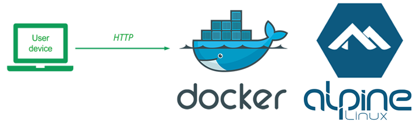
Using Ubuntu as a base image includes a large number of libraries and applications that are not needed for our simple Guestbook application. When building and running a large number of container images and containers, for startup speed and storage efficity, one would like to reduce their sizes. One optimization we can make is to use a smaller base image such as Alpine, a set of Linux distributions that focus on removing many non-essential components in runtime Linux systems.
We will now build an Alpine-based container for our application. To begin with, change into the lab's directory.
cd cs430-src/04_container_dockerhub
View Dockerfile.alpine. Similar to Dockerfile.ubuntu, this file can be used to build a container image, but with an Alpine base image specifically made for running Python applications like ours. Note that because this base image already contains Python and pip, there is no need to install them as we did previously, making the Dockerfile simpler.
Dockerfile.alpine
FROM python:alpine
LABEL maintainer="yourname@pdx.edu"
COPY . /app
WORKDIR /app
RUN pip install --no-cache -r requirements.txt
ENTRYPOINT ["python3"]
CMD ["app.py"]As before, make a single edit to this file before using it. Specify your name and PSU e-mail address as the maintainer for the container image that will be built.
We will now build the Alpine container image. Change back into the directory and build the container image from the Dockerfile with a local tag helloalpine.
docker build -f Dockerfile.alpine -t helloalpine .
Examine the container images you now have
docker images
- Take a screenshot of the image generated and its size for your lab notebook. How much smaller is the image than the Ubuntu one?
Then, as before, create a running instance of the helloalpine image and name it helloa.
docker run -p 8000:5000 --name helloa -di helloalpine
Test the container by retrieving http://127.0.0.1:8000 using a browser on the VM, wget, or curl.
See that the container is running:
docker ps -a
Attempt to get an interactive shell on the container by performing the following:
docker exec -it helloa /bin/bash
- Show the output of this command in a screenshot for your lab notebook. What might have happened?
Replace /bin/bash with /bin/sh and repeat the command.
Finally, within the container, examine the file specifying the Alpine release being used (/etc/alpine-release) and perform a process listing command (ps -ef).
- Take a screenshot of the output of each
Exit out of the shell and container. Then, stop the container and remove it from the system
docker stop helloa docker rm helloa
We will now publish the container image we created locally (helloalpine) to the Docker Hub registry at docker.io. Login to Docker Hub again
docker login
The local container image has a tag of helloalpine. To access it via Docker Hub, it will require a global tag that is identified via your Docker Hub user ID. Run the following command, replacing wuchangfeng):
docker tag helloalpine <dockerhub_id>/helloalpine
Then push the image to Docker Hub using the command:
docker push <dockerhub_id>/helloalpine
Examine the container images you've created and tagged so far:
docker images
Then delete them via their names:
docker rmi helloalpine <dockerhub_id>/helloalpine
Run the image directly from Docker Hub. You should see the individual layers of the container being downloaded separately.
docker run -di -p 8000:5000 --name helloa <dockerhub_id>/helloalpine
As before, the container is brought up and the local port of 8000 is mapped into the container port of 5000. Test the container by retrieving http://127.0.0.1:8000 using a browser on the VM, wget, or curl.
Then, log into Docker Hub with a web browser, navigate to the container image.
- Take a screenshot of the container image and its size.
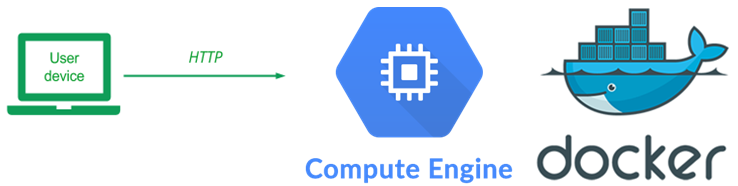
The beauty of container registries is that they can be accessed from anywhere that you want to run them from. We will first demonstrate how this is done from a virtual machine in the cloud. As in the prior labs, create a VM on Google Cloud's Compute Engine with the following specifications:
- Zone:
us-west1-b - Boot disk: Ubuntu 20.04 LTS
- Allow HTTP Traffic (checked)
As before, within Cloud Shell, one can also do
gcloud compute instances create docker-gb \
--image-family=ubuntu-2004-lts \
--image-project=ubuntu-os-cloud \
--zone=us-west1-b \
--machine-type=e2-micro \
--tags=http-server,https-serverssh into the VM and install docker on it.
sudo apt update -y sudo apt install docker.io -y sudo usermod -a -G docker $(whoami)
Logout and then log back in.
Then, run the helloalpine container image, but map the host's port 80 to the container's port 5000.
docker run -di -p 80:5000 --name helloa <dockerhub_id>/helloalpine
Go to a web browser and point it to the External IP address of the VM. Note that, this can also be done by clicking on the IP address from the Compute Engine console. Sign the guestbook with the message "Hello Compute Engine + Docker!"
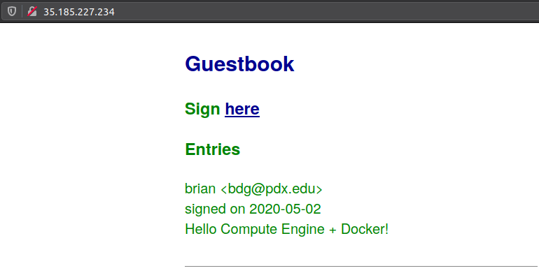
- Take a screenshot of the entry that includes the VM's external IP address for your lab notebook
Google runs billions of containers each week. In order to streamline their execution and management, a VM optimized for containers called Container-Optimized OS is used. We can deploy our container on top of it directly.
One of the optimizations made in the Container OS VM is that container ports are directly mapped onto the host ports when an instance is started with a specified container image. Our container images run the Guestbook on Flask's default port (5000). As a result, in order to access the application from external sites, we need to add a firewall rule to allow incoming traffic to the port.
Option #1: Cloud Shell
We can use Cloud Shell to directly create the firewall rule called tcp-allow-5000 to allow ingress or incoming traffic on port 5000 using the command below. Specify a target tag of http-5000 that can be used to assign the rule to any Compute Engine instance.
gcloud compute firewall-rules create tcp-allow-5000 \
--allow=tcp:5000 --target-tags=http-5000 \
--direction=INGRESSOption #2: Web UI
One can also instantiate the rule via the web console on Google Cloud. To do so, locate "VPC network" in the console, then click on "Firewall rules"
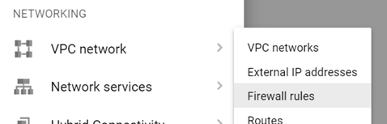
Create a new rule called tcp-allow-5000.
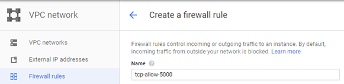
Set its target tag to http-5000. Then, specify the rule to apply on ingress traffic, for all source IP addresses connecting to port 5000.
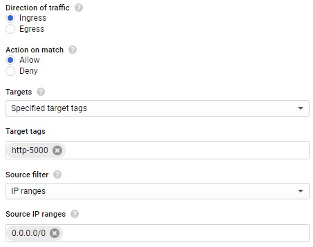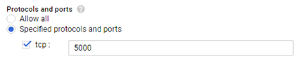
Then, within Compute Engine, create a VM in us-west1-b to deploy your container on.
Option #1: Cloud Shell
Fill in the container image using your previously created container on DockerHub and create the VM with the container running and the appropriate tags attached.
gcloud compute instances create-with-container cos-gb \
--container-image=<DockerHubId>/helloalpine \
--zone=us-west1-b \
--machine-type=e2-micro \
--tags=http-server,http-5000Option #2: Web UI
In the UI, create a VM and specify the container image name to be your Docker Hub image name for the Alpine version of your web application.
The boot disk will be automatically set to Google's Container OS when a container image is specified. Then, Allow HTTP Traffic and click on the "Management, disks, networking, SSH keys" link to expand it. Select the "Networking" tab and specify the http-5000 target tag to allow access to port 5000.
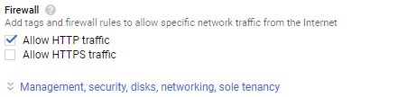
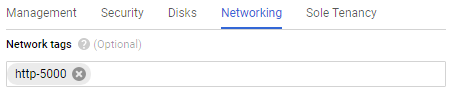
Create the VM and wait for it to come up.
ssh into the instance via the web console or in Cloud Shell via
gcloud compute ssh cos-gbPerform a local request to the web app (e.g. wget http://localhost:5000) to ensure the container is running.
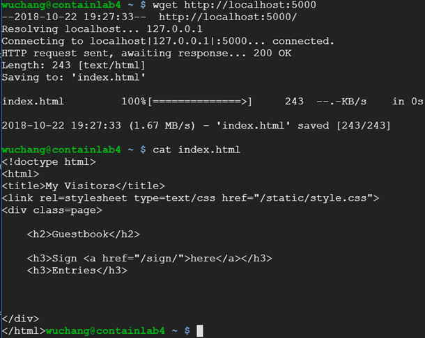
Finally, visit the site via the external IP address on port 5000 to show the site is running. Add a "Hello ContainerOS!" guestbook entry.
- Take a screenshot of the entry that includes the VM's external IP address for your lab notebook
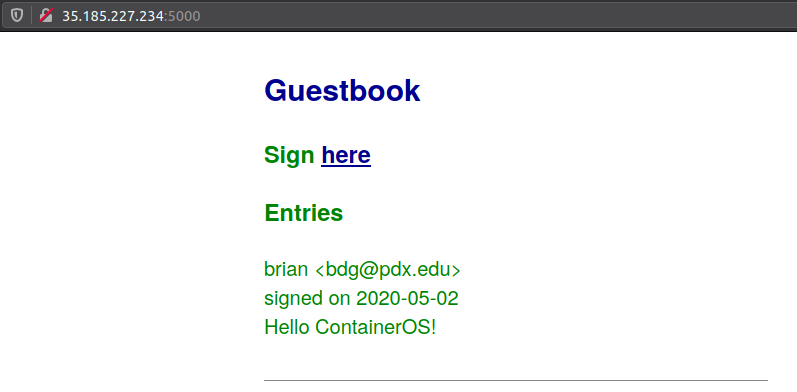
Go back to the web console of Google Cloud and then go to Compute Engine. Visit the VM instances page and delete the VMs you have created. You can also delete them within Cloud Shell via:
gcloud compute instances delete docker-gb cos-gb